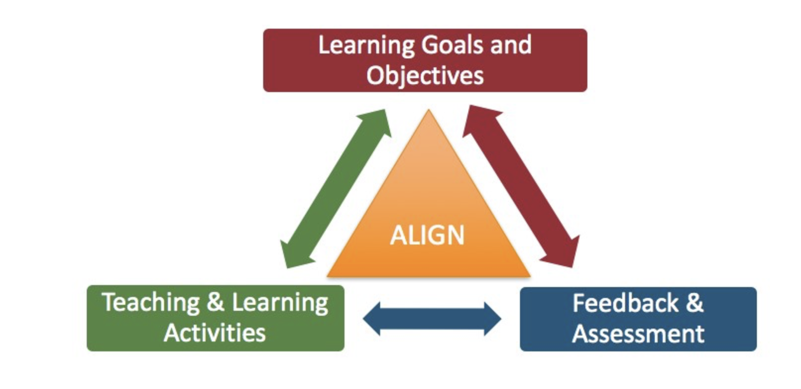
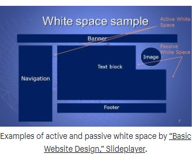

-
<2>Visual Hierarchy
BAER PERFORMANCE MARKETING
BAER PERFORMANCE>
A crisis can slow down the economy, but it cannot stop it. There are opportunities in every economic environment, and this “new normal” suddenly thrust upon us is no different. When others in your industry scale back or shut down, your business can be the one to emerge at the forefront.
Alignment
Manchester Digital
https://www.manchesterdigital.com/ Organisation Alignment is the key to any successful business. Alignment helps organisations to function well & to be successful. It brings balance, focuses people into the areas that really matter, enables employees to understand how their daily activities contribute to the organisation’s vision, mission & strategy, it ensures change programmes achieve their intended aims.
White Space Design
Shopify Partners
https://www.shopify.com/partners/ What is white space? White space or negative space is simply unmarked space in the design. It is the space between the layouts, lines of paragraphs, between paragraphs, between different UI elements and so on. White space does not literally mean an empty space with a white background.